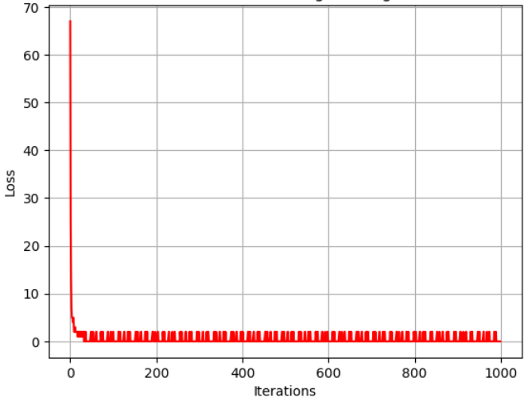
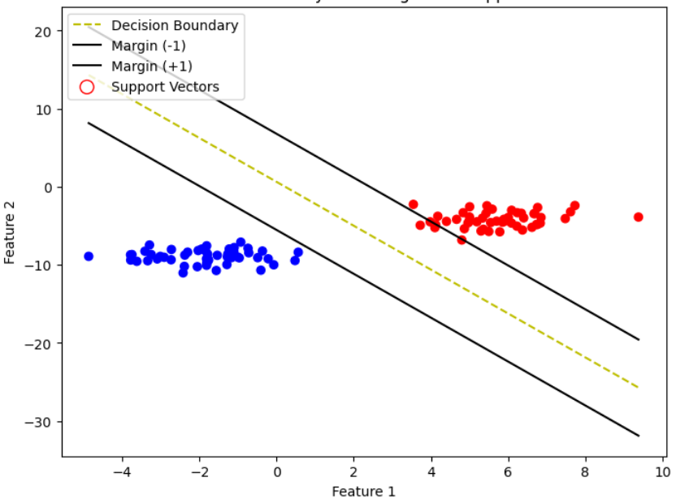
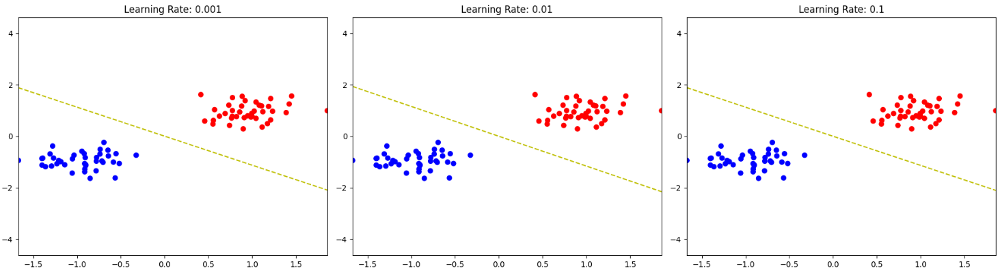
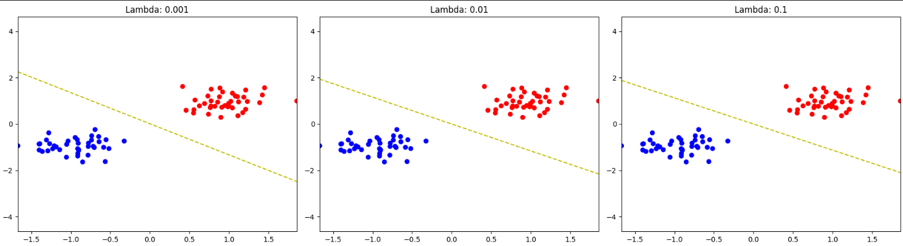

Understanding the Basic Architecture
In this deep dive, we'll explore SVM from implementation to insights, It majorly finds optimal boundaries that maximizes the Distance between each class in a N-dimensional space.
SVM Class Implementation
class SVM:
def __init__(self, learning_rate=0.001, lambda_param=0.01, n_iters=1000):
self.lr = learning_rate
self.lambda_param = lambda_param
self.n_iters = n_iters
self.w = None
self.b = None
self.losses = []
Required Functions:
- fit - Train the SVM model.
- predict - Make predictions with trained model.
The model starts making a Hyperplane whose goal is to divide the N-dimensional data points in best efficient way.
Model Performance Visualization

Shows the change in loss from each iteration preceding.

the decision boundaries,points after them are clearly defined but else are in point of caution.

It Shows how the decision-boundaries is changing with learning rate.

It Shows how the decision-boundaries is changing with Regularization param(lambda).
Key Learnings and Challenges
- Outlier Detection can be used to detect outliers .
- Memory Efficient Just stores the SVM not the data points during training.
- Computationally expensive with a time constraint of O(n^3)
- Black BoxInterpretation is difficult cause of complex functions of SVM.
- Poor difficult to handle missing and noisy data.